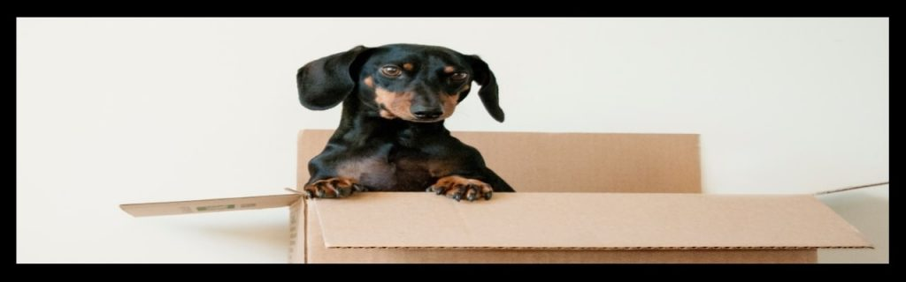

PRZEWOZY Z ZWOLLE DO POLSKI
Busy Zwolle Polska to linia międzynarodowego transportu osobowego. Przewozy ze Zwolle odbywają się codziennie co daje dużą łatwość w doborze odpowiedniego terminu wyjazdu. Dużym ułatwieniem jest to, że zabieramy z podanego adresu w Zwolle i zawozimy pod wskazany do Polski. Na całej długości trasy nie ma żadnych przesiadek. W trasę wyrusza zawsze dwóch kierowców. Wszystkie nasze auta po każdej trasie są dokładnie sprzątane i dezynfekowane. Jeździmy najkrótszymi możliwymi trasami. Dla naszych stałych klientów czekają atrakcyjne promocje i bilety na darmowe przejazdy.
Najkrótsza trasa przejazdu linii busy Zwolle Polska przedstawiona na mapie.
Prezentujemy najkrótszą trasę przejazdu linii busy Zwolle Polska. Zazwyczaj staramy się jak najbardziej zbliżyć do przedstawionego rozwiązania na mapie. Przewozy ze Zwolle do Polski to gwarancja bezpiecznej podróży a także oszczędność czasu. Zarezerwuj swój bilet już dzisiaj.
Przewozimy paczki na trasie linii busy Zwolle Polska - wyślij paczkę swoim bliskim.

Informujemy, że istnieje możliwość nadania paczki na trasie linii busy Zwolle Polska. Zaskocz swoich najbliższych i wyślij im paczkę ze Zwolle do Polski. Więcej informacji udzielamy kontaktując się telefonicznie z biurem.
Jak można zarezerwować busy Zwolle Polska ?
- Kontakt Telefoniczny pod nr tel. 48 794-180-600 (preferowana opcja kontaktu)
- Wysłanie smsa pod nr tel. 48 794-180-600 z datą wyjazdu, miejscem podróży, ilością rezerwowanych miejsc
- Formularz kontaktowy na dole strony lub w menu w zakładce kontakt,
- Siedziba biura Vanwiatrak
Busy Zwolle Warmińsko-Mazurskie Polska
Przedstawiamy dostępne miasta na trasie linii busy Zwolle Warmińsko-Mazurskie.
- busy Zwolle - Barczewo, Bartoszyce, Biała Piska, Biskupiec, Bisztynek, Braniewo, Dobre Miasto, Działdowo, Elbląg, Ełk, Frombork, Giżycko, Gołdap, Górowo Iławeckie, Iława, Jeziorany, Kętrzyn, Kisielice, Korsze, Lidzbark, Lidzbark Warmiński, Lubawa, Mikołajki, Miłakowo, Miłomłyn, Młynary, Morąg, Mrągowo, Nidzica, Nowe Miasto Lubawskie, Olecko, Olsztyn, Olsztynek, Orneta, Orzysz, Ostróda, Pasłęk, Pasym, Pieniężno, Pisz, Reszel, Ruciane Nida, Ryn, Sępopol, Susz, Szczytno, Tolkmicko, Węgorzewo, Wielbark, Zalewo
Busy Zwolle Pomorskie Polska
Przedstawiamy dostępne miasta na trasie linii busy Zwolle Pomorskie.
- busy Zwolle - Brusy, Bytów, Chojnice, Czarna Woda, Czarne, Czersk, Człuchów, Debrzno, Dzierzgoń, Gdańsk, Gdynia, Gniew, Hel, Jastarnia, Kartuzy, Kępice, Kościerzyna, Krynica Morska, Kwidzyn, Lębork, Łeba, Malbork, Miastko, Nowy Dwór Gdański, Nowy Staw, Pelplin, Prabuty, Pruszcz Gdański, Puck, Reda, Rumia, Skarszewy, Skórcz, Słupsk, Sopot, Starogard Gdański, Sztum, Tczew, Ustka, Wejherowo, Władysławowo, Żukowo
Busy Zwolle Zachodniopomorskie Polska
Przedstawiamy dostępne miasta na trasie linii busy Zwolle Zachodniopomorskie.
- busy Zwolle - Barlinek, Barwice, Białogard, Biały Bór, Bobolice, Borne Sulinowo, Cedynia, Chociwel, Chojna, Choszczno, Czaplinek, Człopa, Darłowo, Dębno, Dobra, Dobrzany, Drawno, Drawsko Pomorskie, Dziwnów, Golczewo, Goleniów, Gościno, Gryfice, Gryfino, Ińsko, Kalisz Pomorski, Kamień Pomorski, Karlino, Kołobrzeg, Koszalin, Lipiany, Łobez, Maszewo, Mielno, Mieszkowice, Międzyzdroje, Mirosławiec, Moryń, Myślibórz, Nowe Warpno, Nowogard, Pełczyce, Płoty, Polanów, Police, Połczyn-Zdrój, Pyrzyce, Recz, Resko, Sianów, Sławno, Stargard, Stepnica, Suchań, Szczecin, Szczecinek, Świdwin, Świnoujście, Trzcińsko-Zdrój, Trzebiatów, Tuczno, Tychowo, Wałcz, Węgorzyno, Wolin, Złocieniec
Busy Zwolle Kujawsko-Pomorskie Polska
Przedstawiamy dostępne miasta na trasie linii busy Zwolle Kujawsko-Pomorskie.
- busy Zwolle - Aleksandrów Kujawski, Barcin, Brodnica, Brześć Kujawski, Bydgoszcz, Chełmno, Chełmża, Chodecz, Ciechocinek, Dobrzyń nad Wisłą, Gniewkowo, Golub-Dobrzyń, Górzno, Grudziądz, Inowrocław, Izbica Kujawska, Jabłonowo Pomorskie, Janikowo, Janowiec Wielkopolski, Kamień Krajeński, Kcynia, Koronowo, Kowal, Kowalewo Pomorskie, Kruszwica, Lipno, Lubień Kujawski, Lubraniec, Łabiszyn, Łasin, Mogilno, Mrocza, Nakło nad Notecią, Nieszawa, Pakość, Piotrków Kujawski, Radziejów, Radzyń Chełmiński, Rypin, Sępólno Krajeńskie, Skępe, Solec Kujawski, Strzelno, Szubin, Świecie, Toruń, Tuchola, Wąbrzeźno, Więcbork, Włocławek, Żnin
Busy Zwolle Wielkopolska Polska
Przedstawiamy dostępne miasta na trasie linii busy Zwolle Wielkopolska.
- busy Zwolle - Gostyń, Gniezno, Jarocin, Kalisz, Koło, Konin, Krotoszyn, Leszno, Luboń, Oborniki, Ostrów Wielkopolski, Piła, Pleszew, Poznań, Rawicz, Śrem, Środa Wielkopolska, Swarzędz, Szamotuły, Trzcianka, Turek, Wągrowiec, Wolsztyn, Września,
Busy Zwolle Mazowieckie Polska
Przedstawiamy dostępne miasta na trasie linii busy Zwolle Mazowieckie.
- busy Zwolle - Białobrzegi, Bieżuń, Błonie, Brok, Brwinów, Chorzele, Ciechanów, Czerwińsk nad Wisłą, Drobin, Garwolin, Gąbin, Glinojeck, Gostynin, Góra Kalwaria, Grodzisk Mazowiecki, Grójec, Halinów, Iłża, Józefów, Kałuszyn, Karczew, Kobyłka, Konstancin-Jeziorna, Kosów Lacki, Kozienice, Legionowo, Lipsko, Lubowidz, Łaskarzew, Łochów, Łomianki, Łosice, Maków Mazowiecki, Marki, Milanówek, Mińsk Mazowiecki, Mława, Mogielnica, Mordy, Mrozy, Mszczonów, Myszyniec, Nasielsk, Nowe Miasto nad Pilicą, Nowy Dwór Mazowiecki, Ostrołęka, Ostrów Mazowiecka, Otwock, Ożarów Mazowiecki, Piaseczno, Piastów, Pilawa, Pionki, Płock, Płońsk, Podkowa Leśna, Pruszków, Przasnysz, Przysucha, Pułtusk, Raciąż, Radom, Radzymin, Różan, Sanniki, Serock, Siedlce, Sierpc, Skaryszew, Sochaczew, Sokołów Podlaski, Sulejówek, Szydłowiec, Tarczyn, Tłuszcz, Warka, Warszawa, Węgrów, Wołomin, Wyszków, Wyszogród, Wyśmierzyce, Zakroczym, Ząbki, Zielonka, Zwoleń, Żelechów, Żuromin, Żyrardów
Busy Zwolle Lubuskie Polska
Przedstawiamy dostępne miasta na trasie linii busy Zwolle Lubuskie.
- busy Zwolle - Babi Most, Bytom Odrzański, Cybinka, Czerwieńsk, Dobiegniew, Drezdenko, Gorzów Wielkopolski, Gozdnica, Gubin, Iłowa, Jasień, Kargowa, Kostrzyń nad Odrą, Kożuchów, Krosno Odrzańskie, Lubniewice, Lubsko, Łęknica, Małomice, Międzyrzecz, Nowa Sól, Nowe Miasteczko, Nowogród Bobrzański, Ośno Lubuskie, Otyń, Rzepin, Skwierzyna, Sława, Słubice, Strzelce Krajeńskie, Sulechów, Sulęcin, Szlichtyngowa, Szprotawa, Świebodzin, Torzym, Trzciel, Witnica, Wschowa, Zbąszynek, Zielona Góra, Żagań, Żary
Busy Zwolle Łódzkie Polska
Przedstawiamy dostępne miasta na trasie linii busy Zwolle Łódzkie.
- busy Zwolle - Aleksandrów Łódzki, Bełchatów, Biała Rawska, Błaszki, Brzeziny, Drzewica, Działoszyn, Głowno, Lututów, Kamieńsk, Koluszki, Konstantynów Łódzki, Krośniewice, Kutno, Łask, Łęczyca, Łowicz, Łódź, Opoczno, Ozorków, Pabianice, Pajęczno, Piątek, Piotrków Trybunalski, Poddębice, Przedbórz, Radomsko, Rawa Mazowiecka, Rzgów, Sieradz, Skierniewice, Stryków, Sulejów, Szadek, Tomaszów Mazowiecki, Tuszyn, Uniejów, Warta, Wieluń, Wieruszów, Zduńska Wola, Zelów, Zgierz, Złoczew, Żychlin
Busy Zwolle Podlaskie Polska
Przedstawiamy dostępne miasta na trasie linii busy Zwolle Podlaskie.
- busy Zwolle - Augustów, Białystok, Bielsk Podlaski, Brańsk, Choroszcz, Ciechanowiec, Czarna Białostocka, Czyżew, Dąbrowa Białostocka, Drohiczyn, Grajewo, Goniądz, Hajnówka, Jedwabne, Kleszczele, Knyszyn, Kolno, Krynki, Lipsk, Łapy, Łomża, Mońki, Nowogród, Rajgród, Sejny, Siemiatycze, Sokółka, Stawiski Suchowola, Supraśl, Suraż, Suwałki, Szepietowo, Szczuczyn, Tykocin, Wasilków, Wysokie Mazowieckie, Zabłudów, Zambrów